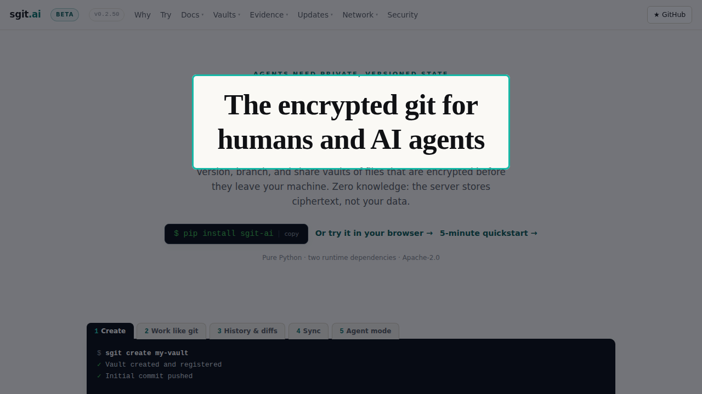
00:07scene 1 of 13s017.9 s
Encrypted before it leaves
This is sgit. Git workflows over folders that are encrypted before anything leaves your machine.
still · https://sgit.ai/ · spot heading:The encrypted git
Encrypted, versioned folders the server can never read
00:00opening7.3 s
In the next ninety seconds: what a vault is, what the server can and cannot see, and a published vault opened live in the browser.

00:07scene 1 of 13s017.9 s
This is sgit. Git workflows over folders that are encrypted before anything leaves your machine.
still · https://sgit.ai/ · spot heading:The encrypted git
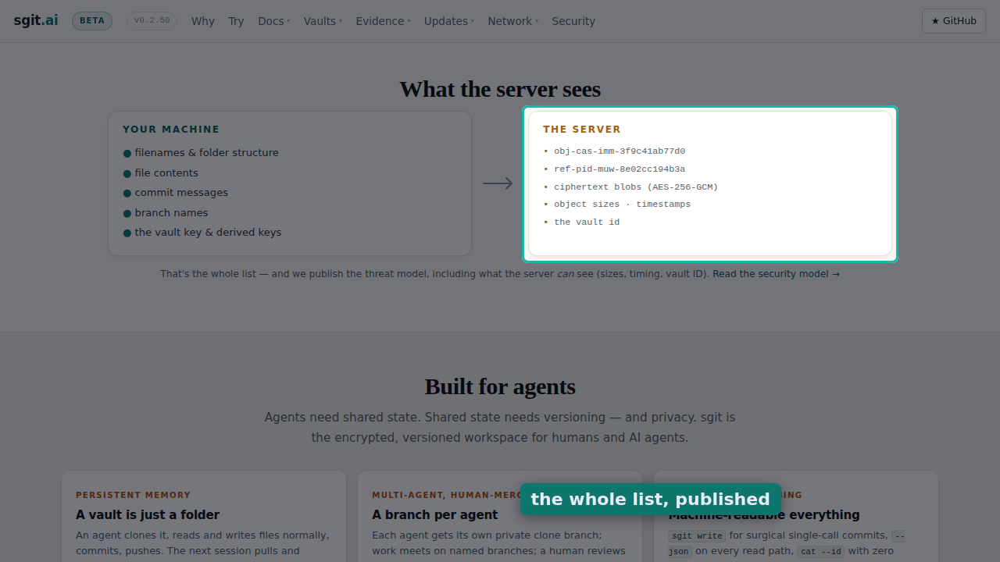
00:15scene 2 of 13s029.2 s
The server stores ciphertext under opaque identifiers. File names, contents and commit messages never reach it.
still · https://sgit.ai/ · scroll to “What the server sees” · spot right-column · label “the whole list, published”
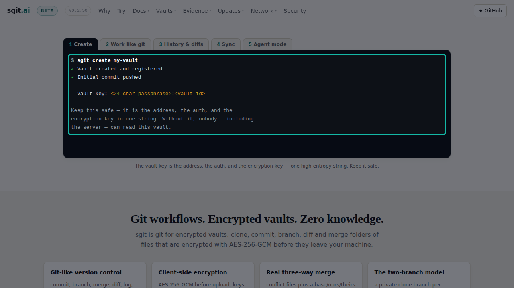
00:24scene 3 of 13s032.9 s
Creating a vault is one command.
still · https://sgit.ai/ · scroll to “Work like git” · spot terminal
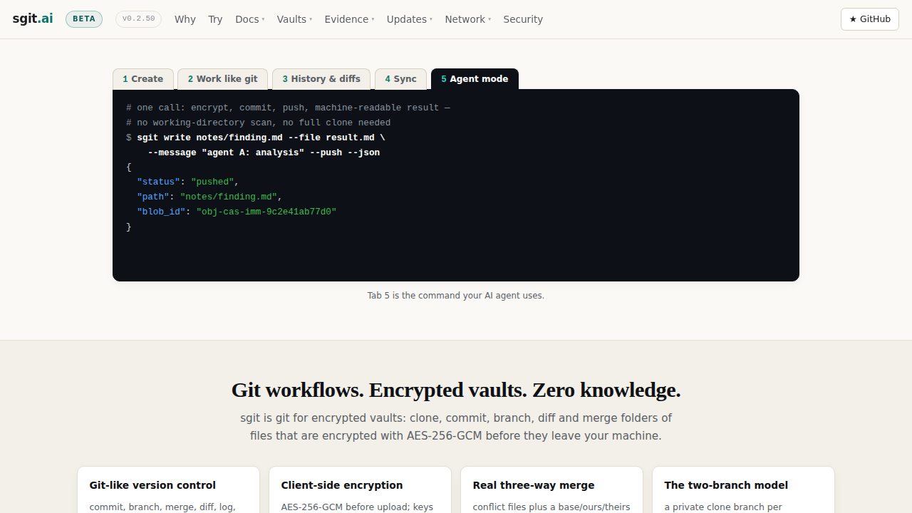
00:27scene 4 of 13s047.6 s
Then you work like git. Status, commit, history, sync, and an agent mode built for machines.
clip · https://sgit.ai/ · scroll to “Work like git”
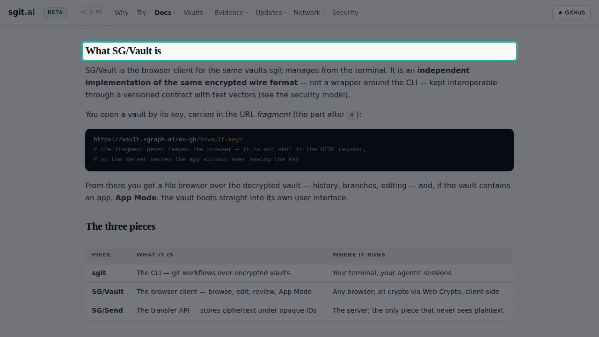
00:34scene 5 of 13s058.8 s
SG Vault is the same vault in the browser. One encrypted wire format, no wrapper around the command line.
still · https://sgit.ai/vault/ · scroll to “What SG/Vault is” · spot heading:What SG/Vault is
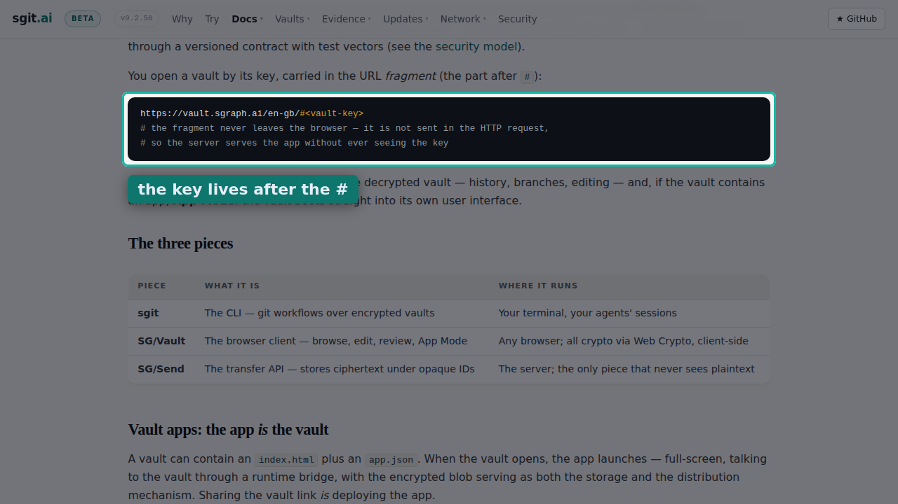
00:43scene 6 of 13s069.5 s
You open a vault by its key, carried in the URL fragment. The fragment is never sent, so the server never sees the key.
still · https://sgit.ai/vault/ · scroll to “You open a vault by its key” · spot code · label “the key lives after the #”
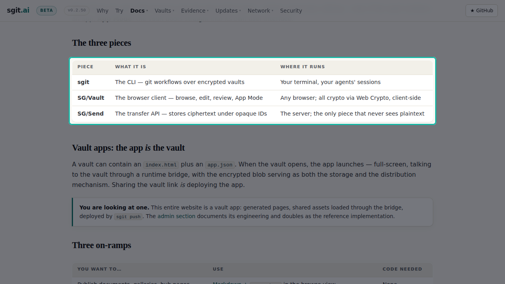
00:53scene 7 of 13s0712.9 s
Three pieces. The sgit command line, the SG Vault browser client, and SG Send, the transfer API that never sees plaintext.
still · https://sgit.ai/vault/ · scroll to “The three pieces” · spot table
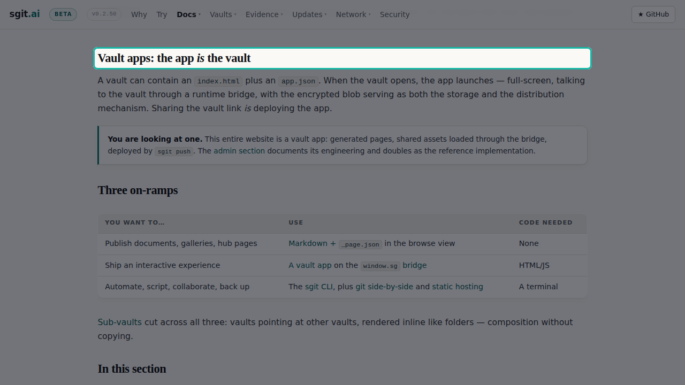
01:06scene 8 of 13s085.7 s
A vault can contain an app. Sharing the vault link is deploying the app.
still · https://sgit.ai/vault/ · scroll to “Vault apps: the app is the vault” · spot heading:Vault apps: the app is the vault
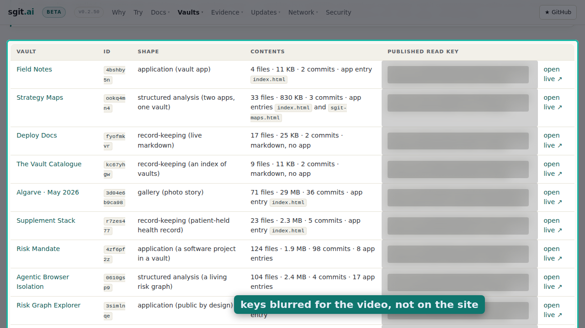
01:11scene 9 of 13s099.0 s
sgit dot ai publishes read keys for its demo vaults on purpose. A read key cannot become write access.
still · https://sgit.ai/demos/vaults/index.html · scroll to “Published read key” · spot table · blur keys · label “keys blurred for the video, not on the site”
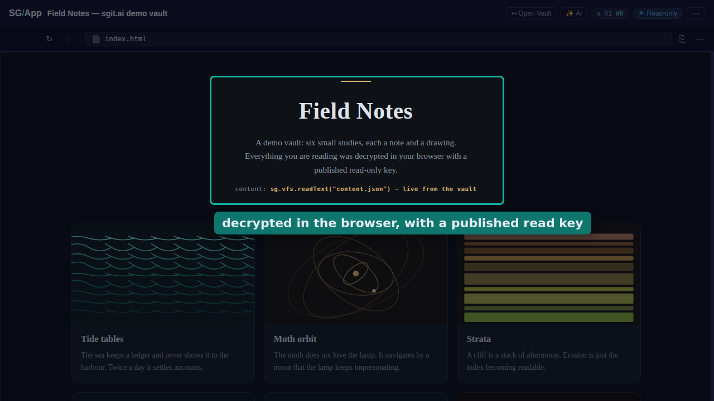
01:20scene 10 of 13s109.1 s
Here is one, opened live. Everything on this page was decrypted in the browser with a published read only key.
still · published vault “Field Notes” · spot rect · label “decrypted in the browser, with a published read key”
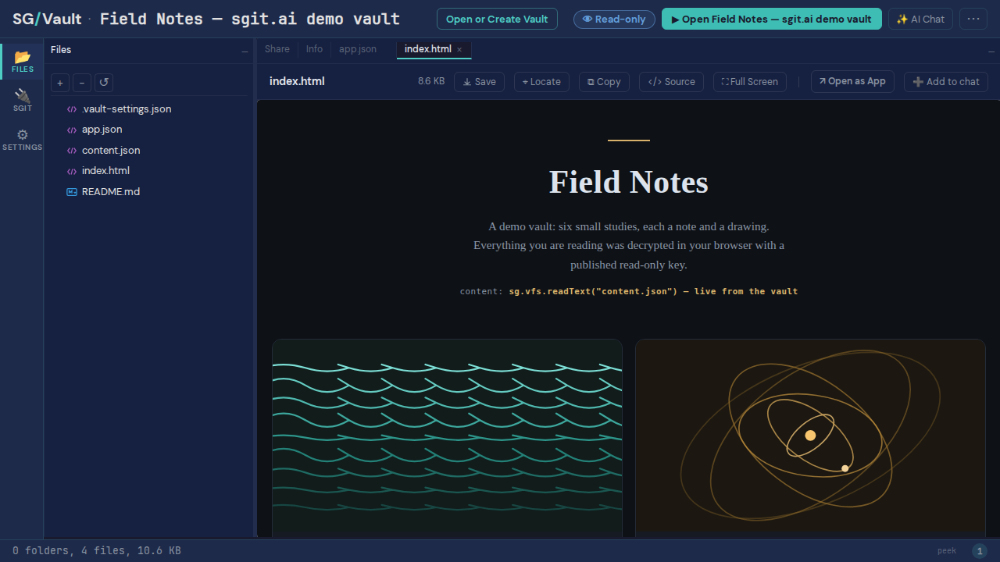
01:29scene 11 of 13s119.0 s
Behind the app is the vault itself. Files, history and branches, in the same file browser you get for any vault.
clip · published vault “Field Notes”
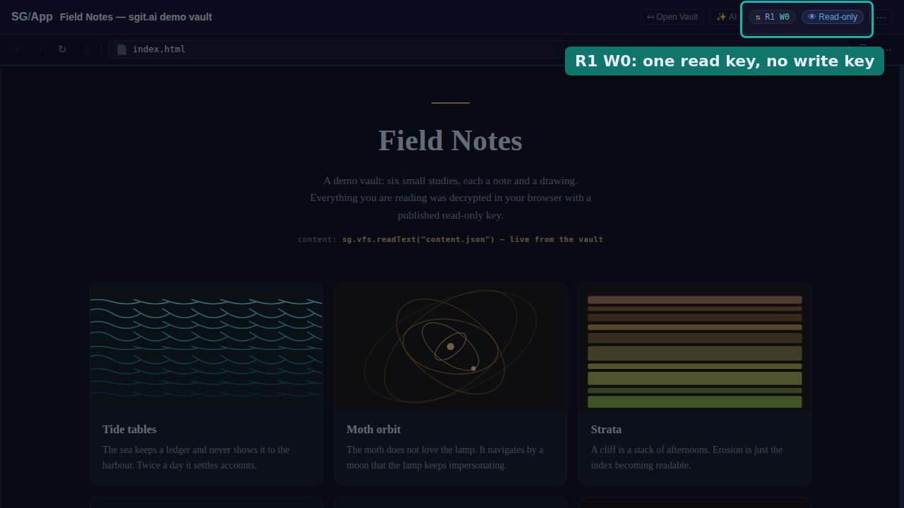
01:38scene 12 of 13s125.3 s
And the badge says what the key allows. One read, zero writes.
still · published vault “Field Notes” · spot badges · label “R1 W0: one read key, no write key”
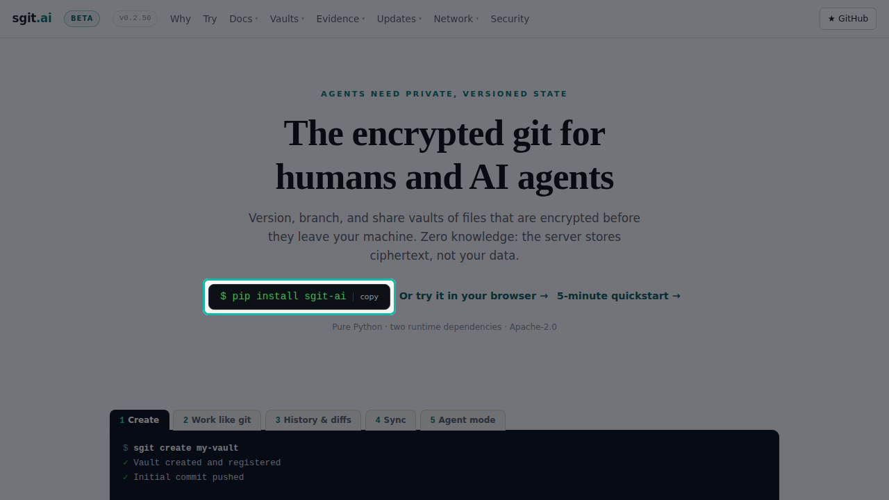
01:44scene 13 of 13s137.3 s
pip install sgit dash ai. Or try it in your browser, at sgit dot ai.
still · https://sgit.ai/ · spot pip
01:51closing11.6 s
This video was made by an agent, end to end, with no human at a screen and no API cost. The numbers are on the screen.
The narration in order, as plain text, ready to paste next to the video.
In the next ninety seconds: what a vault is, what the server can and cannot see, and a published vault opened live in the browser. This is sgit. Git workflows over folders that are encrypted before anything leaves your machine. The server stores ciphertext under opaque identifiers. File names, contents and commit messages never reach it. Creating a vault is one command. Then you work like git. Status, commit, history, sync, and an agent mode built for machines. SG Vault is the same vault in the browser. One encrypted wire format, no wrapper around the command line. You open a vault by its key, carried in the URL fragment. The fragment is never sent, so the server never sees the key. Three pieces. The sgit command line, the SG Vault browser client, and SG Send, the transfer API that never sees plaintext. A vault can contain an app. Sharing the vault link is deploying the app. sgit dot ai publishes read keys for its demo vaults on purpose. A read key cannot become write access. Here is one, opened live. Everything on this page was decrypted in the browser with a published read only key. Behind the app is the vault itself. Files, history and branches, in the same file browser you get for any vault. And the badge says what the key allows. One read, zero writes. pip install sgit dash ai. Or try it in your browser, at sgit dot ai. This video was made by an agent, end to end, with no human at a screen and no API cost. The numbers are on the screen.
| cut | length | size | slides | TTS | record | drift | pipeline |
|---|---|---|---|---|---|---|---|
| landscape 1280×720 · Kokoro | 02:03.14 | 8.4 MB | 15 | 166 s | 123.2 s | 177 ms | 303 s |
| shorts 1080×1920 · Kokoro | 01:07.27 | 7.4 MB | 8 | 99 s | 67.3 s | 130 ms | 176 s |
| landscape 1280×720 · OpenRouter gpt-audio | 01:50.55 | 8.0 MB | 15 | 5 s | 110.6 s | 160 ms | 127 s |
Source of truth is reel.json. Stills in images/ (desktop) and images-shorts/ (phone); clips in clips/. Timecodes are the landscape cut's TTS durations.